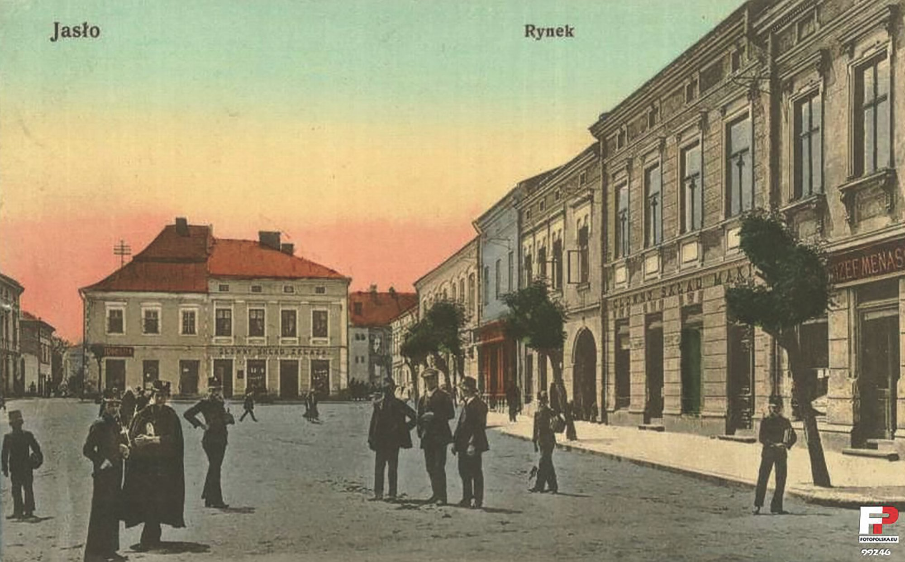
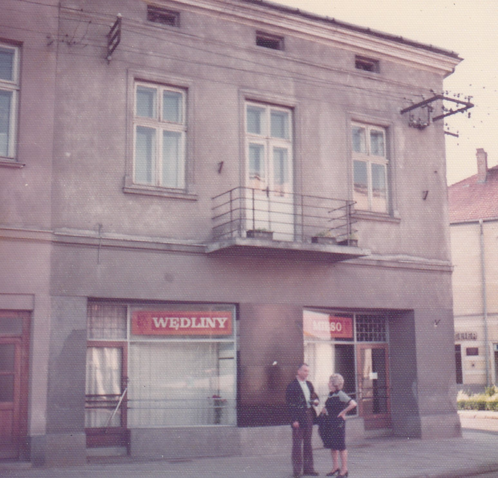
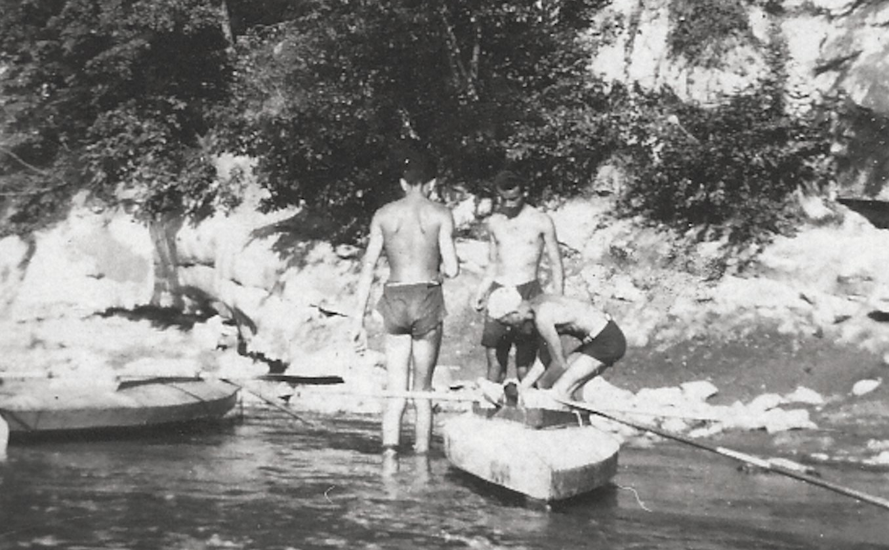
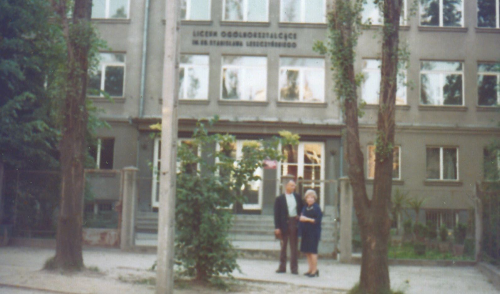
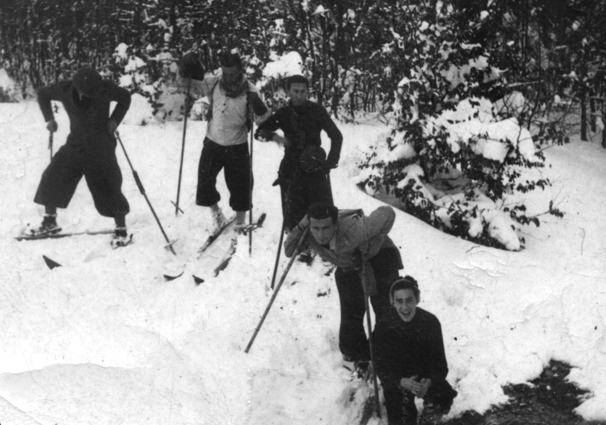
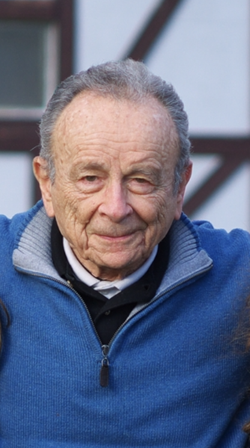

At a Glance
Arrive, check in, and walk the Old Town and Royal Castle. Warsaw was 85% destroyed by the Nazis — deliberately, building by building — and rebuilt from photographs and paintings. Adam described arriving back in Poland in 1947 and seeing the devastation from the train. The city you walk through today is an act of collective memory and defiance.
The POLIN Museum of the History of Polish Jews is one of the finest museums in Europe — a 1,000-year story told with extraordinary care. Spend the morning here (free on Thursdays). This is essential preparation for everything that follows: Adam's family, their world, their annihilation, and the handful of survivors.
"Of all the children shown in this picture, I am the only one left. Most did not survive the war."
— Adam Kahane, captioning a family photograph from JasłoIn the afternoon, the Warsaw Uprising Museum tells the story of the 1944 uprising — what was happening in Poland while Adam and his family were surviving in Soviet labor camps and collective farms in Kazakhstan.
A free day to wander at your own pace — the Praga neighbourhood across the Vistula, food markets, restaurants. This is also a good evening to sit with the memoir and read ahead to the Jasło chapters before the most personal part of the journey begins.
Train from Warsaw (~1.5 hours). The Łódź Jewish Cemetery is one of the largest in the world — over 180,000 graves. Adam's father Jacob operated his pharmacy in the Łódź ghetto almost until its final liquidation. After the war, Adam returned here and inherited the pharmacy from his uncle Iziu.
"My father stayed in Łódź during the occupation. Luckily his pharmacy was in the area designated as ghetto and he operated it almost to the time of the final liquidation of the ghetto. I was told by an Auschwitz survivor that he died of a heart attack on the train to the death camp. He was only 54."
— Adam Kahane, Memoirs of a Lucky Man"As I entered the pharmacy, I saw Uncle Iziu. He kissed me and said, 'This place is yours. I will help you run it for a while.'"
— Adam Kahane, on returning to Łódź in January 1947In the evening, Manufaktura — a vast 19th-century textile mill (the kind that made Łódź famous) turned into the city's cultural heart. Good for dinner and a drink.
Train from Łódź (~2.5 hours). Check in and walk to Kazimierz, the historic Jewish quarter. Adam's apartment at Świętego Sebastiana 5 is steps from Plac Wolnica, the neighbourhood's main square. Spend the evening wandering — synagogues, Jewish bookshops, restaurants, and bars fill this neighbourhood. Find his street. Stand outside number 5.
"We concluded that there is no future for us in communist Poland and decided to emigrate. The pharmacy was very profitable but I got only $2000 when I sold it... We left Poland in September 1947 after a year's stay."
— Adam Kahane, on leaving Kraków for ParisWawel Royal Castle in the morning — the historic seat of Polish kings, dramatically positioned above the Vistula. Book timed tickets online in advance
Schindler's Enamel Factory in the afternoon — now a superb WWII museum telling the story of Kraków's Jews under Nazi occupation. The occupation of Kraków is the backdrop to the years when Adam's family in Jasło were being shot, deported, and murdered. Book tickets online — sells out
This is not simply a historical visit. Adam's family members were murdered here.
"After his retirement they lived in Vienna. When Austria was annexed they moved to Holland — he was a Dutch citizen — and from there they were eventually taken to Auschwitz."
— Adam Kahane, on his Uncle Mundek Menasse, who built railroads in Sumatra"I was told by an Auschwitz survivor that he died of a heart attack on the train to the death camp. He was only 54."
— Adam KahaneTrain from Kraków to Oświęcim (~1.5 hours). Plan a full day. Go easy on yourself afterward — the evening back in Kazimierz will feel different after this. Book guided tour weeks in advance at auschwitz.org — essential
A genuinely free day — especially welcome after Auschwitz. Wander the Main Market Square (Rynek Główny), sit in a café in Kazimierz, explore side streets, eat well. Kraków's nightlife is among the best in Central Europe. Rest, reflect, and let the city do its work.

Train from Kraków (~2 hours). Arrive mid-morning. Bring a printed copy of the memoir. This is the day to read it on location.
The Rynek — His Grandfather's House
The memoir includes a photograph of the Rynek with a caption identifying the house: "my grandfather's house (light red roof) where I lived between the ages of five and 17." The business — "Józef Menasse and Son-in-Law," a quality textile shop — operated from this address. Stand on the Rynek and find it.
"My parents' divorce was a blessing for me because I exchanged the life of an only child in a dysfunctional family in a large industrial city for a life in a large close-knit family in a pretty, small town full of aunts, uncles, and cousins."
— Adam Kahane, on moving to Jasło aged 5
The Jasiołka River
Walk from the Rynek down to the Jasiołka. Adam and Reggie biked here every summer day. They picked up their kayak at Mr. Kramer's warehouse near the bridge and paddled to the beach. They made fires and baked potatoes in the ashes. On the far bank was a meadow and a small grove — a place Adam thought about for the rest of his life when he wanted to feel at peace.
"On the other bank of the river were a meadow and a small grove. It was so pretty and peaceful there. Many years later, when I wanted to think about something relaxing, I thought about this place."
— Adam Kahane
The Boys' High School
Adam's school — the I Liceum Ogólnokształcące im. Króla Stanisława Leszczyńskiego — is one of the oldest in the region and still operating today. The building was rebuilt after the war on the same site. Adam was elected deputy head of class here, the only Jewish boy to hold that position. He and Reggie organized a student strike against an unpopular teacher of military preparedness and were expelled just before the war began — making their expulsion moot when Germany invaded in September 1939 and school never resumed.
Aunt Manka's house was directly across the street from the school — where Adam and Reggie would play bridge when excused from Catholic religion class.

"Actually this became immaterial because in September, war broke out and we never went back to that school."
— Adam Kahane, on their expulsion and the outbreak of warMonastery Hill — His First Kiss
Adam's account of his first kiss is one of the memoir's most charming passages. His cousin Renatka's friend Hala suggested a walk to Monastery Hill, where they found a bench under chestnut trees.
"After a minute of silence, Hala said, 'Adasiu, you can kiss me, if you want.' I complied without hesitation, but somewhat awkwardly."
— Adam KahaneThe Weight of What Happened Here
The family that filled Jasło with life was almost entirely annihilated. As you walk the town, carry these names:
- Uncle Dulek — a lawyer in Jasło. As he was marched to the train for Treblinka, he waved to his teacher Mr. Grudniewicz and called out in Latin: Ave Caesar, morituri te salutant — "Hail Caesar, we who are about to die salute you."
- Aunt Manka — a military doctor decorated by the German Army in WWI. She believed her German citation would protect her. She was arrested by the Gestapo and shot. As she was led to her execution, she cursed her executioners and told them they would pay for it.
- Cousins Renatka (21) and Jasia (18) — Manka's daughters, Adam's close companions. They were taken by car to a small town outside Jasło, ordered to push the car, and shot from behind. Jasia lived two more hours. Adam translated the account of their deaths for the Holocaust Museum.
"This is a horrible story, which hit me very hard because we were very close with Renatka and Jasia."
— Adam KahaneA slow morning. Return to any place from yesterday that needs more time. Sit on the Rynek with a coffee. Let it settle. Take the midday train back to Kraków for one final night before heading to the mountains.
2-hour bus from Kraków. Arrive and walk Krupówki, Zakopane's lively pedestrian street — stalls selling oscypek (smoked sheep's cheese), mountain food, and local crafts. The Tatra mountains frame the town on every side. Adam and Reggie grew up skiing in these mountains. His beloved ski shop in Washington D.C. was an echo of this world.
"In 1935 we took part in a sightseeing camp in the mountains. About 40 boys from all over Poland took part in the camp. We were the only Jewish boys... We hiked in high mountains and took a boat trip through a picturesque gorge. I will never forget how good the food tasted."
— Adam Kahane, on his mountain camp as a teenager
The crown jewel of the Tatras — a glacial lake at 1,395 metres, surrounded by peaks. Bus from Zakopane to the trailhead, then a 2-hour walk each way on a well-maintained path. Horse carriages are available for part of the route if needed. The scenery is extraordinary.
A second hike, a cable car up Kasprowy Wierch, or simply wandering and eating well. After the intensity of the preceding days, these mountains — where Adam played as a boy — are a good place to breathe.
Bus back from Zakopane. One final evening in Kazimierz — the neighbourhood where Adam spent his last year in Poland before boarding the train to Paris in the autumn of 1947. Dinner, a drink, and time to reflect. Fly home from Kraków airport on day 15.
"Finally, in the fall of 1947, we boarded the train to Paris with hopes and anxiety — to start a new chapter of our lives."
— Adam KahaneA Note on the Memoir

Every stop on this itinerary was shaped by My Journey: Memoirs of a Lucky Man by Adam Kahane. The memoir describes his childhood on the Jasło Rynek, his summers on the Jasiołka river, his school, his family, his deportation, his years in Soviet labor camps and Kazakhstan, his postwar life in Łódź and Kraków, and his emigration to New York via Paris in 1948.
We built this trip to walk where he walked and see what remains. Some things are gone. Some, remarkably, are still there — including the house on the Rynek with the light red roof, the river, and the mountains he loved.
Bring the memoir. Read it on location. That is the point.
"Be optimistic. Eventually everything works out. Optimists live longer and enjoy life more. Hope you all will have as lucky and happy a life as I did."
— Adam Kahane, final words of his memoir, written at age 92